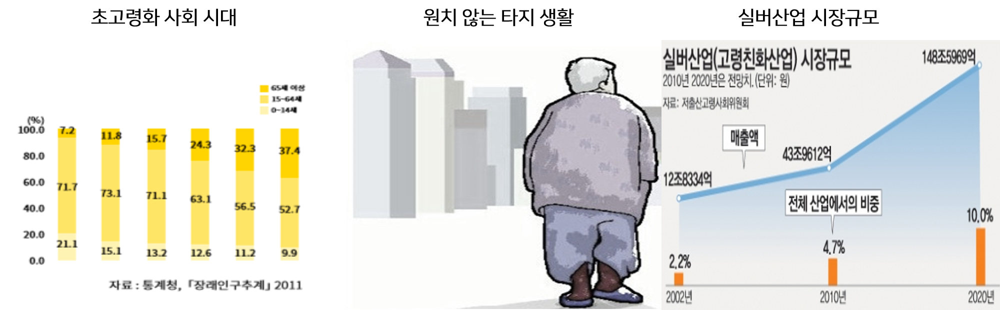
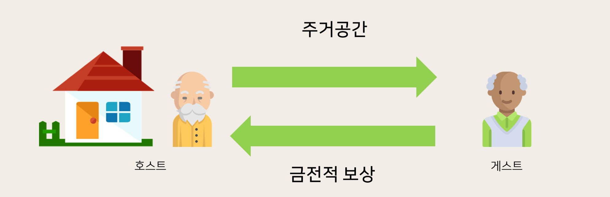
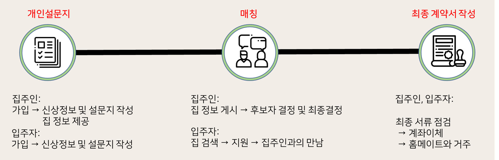

Silver and Share는 실버세대들을 위한 쉐어하우스 매칭 시스템입니다.
혼자 사는 고령 노인분들을 위해 서로 같이 매칭이 되어서 서로 의지하며 살 수 있도록 만든 홈페이지 입니다.
현재 대한민국의 지속적인 고령화로인하여 초고령화 사회에 진입하게 되었습니다..
이로인하여 혼자 살게된 노인분들은 본인이 원치않더라도 생명을 걱정하여 요양원으로 가게되던지 아니면 본인이 살던 지역을
떠나서 자식의 집에 들어가 살게되는 경우도 있습니다.
이러한 감성적인 이유 뿐만은 아닌 현재 실버산업의 시장 규모는 빠르게 성장하고 있다.2010년에는 43조인 산업 규모가
2020년에는 148조에 가까운 산업 규모를 가질 것으로 예상됩니다.
그래서 이러한 실버세대들을 위한 서비스를 만들게 되었습니다.

저희가 어떤 서비스를 제공하고자 하는지 설명드리겠습니다.
저희가 주로 제공하는 서비스는 매칭입니다. 먼저 넓은 집에 혼자 살게된 노인 한 분이 있습니다.
그리고 경제적으로 더 절약을 하고자 하는 노인분이 계십니다. 저희는 이런 두 사람을 만나게 해주는 다리 역할을 하고자 합니다.

그렇게 함으로서 집을 제공하는 실버 호스트 분은 주거공간을 실버 게스트에게 제공하고 실버 게스트는 금전적인 보상을 실버호스트에게 건넴으로서
둘 사이의 관계가 성립한다고 볼수 있습니다.
좀더 자세한 설명으로는 저희는 개인 설문지를 만들어서 호스트와 게스트 모두 이 설문지를 작성
할 수 있도록하고 실버 호스트는 집 정보를 게시하고 실버 게스트는 지원을 합니다. 집주인은 후보자들의 설문 결과나 지원 동기를 보고
만난 이후 최종 결정을 하게 됩니다. 마지막으로 최종 서류 점검 후 같이 살게됩니다.

부가적인 서비스로는 먼저 저희 홈페이지를 실버 세대 분들을 위한 온라인 커뮤니티를 만들 것입니다.
그리고 서비스를 최대한 이용하기 쉽도록 교육 페이지 또한 준비할 것 입니다.
또 다른 서비스로는 노인 분들을 위한 다양한 아이템을 파는 홈쇼핑 사이트 또한 제공하고자 합니다.
그렇게 하여 노인 분들이 더욱 편한 삶을 살수 있도록 돕고자합니다.